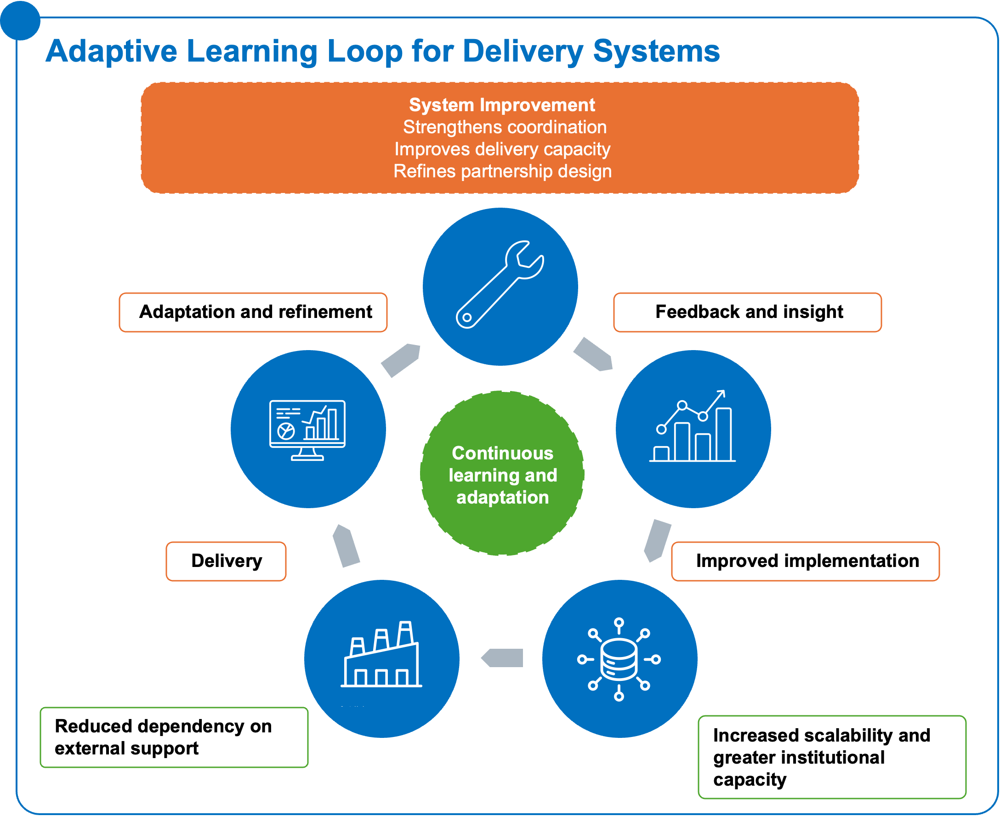

14.1 Financial and delivery metrics
Financial and delivery metrics will help assess how collaboration models perform and mature over time as implementation progresses. Beyond measuring outputs, these indicators provide insight into the consistency of implementation processes, the deployability of financing structures, the strength of institutional coordination, and the gradual reduction of dependency on intensive external support.
Table 5: From metrics to maturity: tracking if capital moves, delivery holds, and markets sustain beyond subsidy.Table 5: From metrics to maturity: tracking if capital moves, delivery holds, and markets sustain beyond subsidy.Together, these indicators help assess whether collaboration approaches are becoming more operationally reliable, financially sustainable, and capable of supporting long-term implementation at scale.
14.2 Social and legitimacy metrics
Table 6: From inclusion to legitimacy: tracking whether systems stay affordable, accountable, and trusted over time.Table 6: From inclusion to legitimacy: tracking whether systems stay affordable, accountable, and trusted over time.As collaboration models expand, long-term sustainability also depends on how implementation is perceived and experienced by affected populations. Social and legitimacy metrics will help capture whether delivery approaches remain accessible, trusted, responsive, and accountable as implementation scales across different communities and user groups.
14.3 Monitoring Progress Along the Impact Capital Continuum
Not all partnership progress is reflected in service outputs or financial performance alone. A key objective of deployability is to create conditions in which opportunities can move progressively from grant-supported activity toward more sustainable, repeatable, and financeable structures. Monitoring should therefore track not only implementation outcomes, but also movement along the Impact Capital Continuum. The following indicators can help assess whether a partnership is becoming more deployable over time:
These indicators should be interpreted alongside sector, delivery, social-impact, and institutional-performance metrics. Not every partnership is expected to move fully toward commercial financing. In some cases, grant funding or public financing will remain appropriate. The purpose of these indicators is to assess whether the partnership is becoming more structured, more efficient, more financeable, and more sustainable over time.
14.4 Localization, Ownership, and Accountability Metrics
Partnership performance should not be assessed only through financial mobilization, implementation outputs, or service delivery outcomes. Monitoring should also track whether partnerships strengthen local ownership, domestic participation, accountability, and institutional capability over time.
The following indicators can help assess progress toward stronger localization and long-term ownership:
These indicators should be assessed alongside financial, operational, and social-performance metrics. Their purpose is to determine whether the partnership is building stronger local institutions, deeper domestic participation, more responsive accountability systems, and greater long-term resilience.
Strong performance is demonstrated not only by project delivery, but also by increasing local ownership, stronger domestic capital participation, meaningful community accountability, and a gradual reduction in dependence on externally managed systems over time.
14.5 Systems Transformation Metrics
Partnerships should be assessed not only on whether they deliver projects, services, or financing, but also on whether they strengthen the systems that enable future opportunities to be implemented more effectively. Monitoring should therefore track changes in institutional capability, coordination quality, financial systems, and market maturity over time.
The following indicators can help assess systems-level outcomes:
These indicators help determine whether a partnership leaves behind stronger systems rather than simply delivering a successful project. Strong performance should be reflected not only in outputs and outcomes, but also in improved institutional capability, stronger coordination, more reliable financial and procurement systems, deeper local market participation, and increased ability to sustain progress over time.
Where possible, systems transformation metrics should be measured at both baseline and follow-up intervals to assess whether partnership activity is creating durable improvements that make future opportunities easier to structure, finance, implement, and scale.
14.6 Learning loops
Monitoring and accountability mechanisms are designed not only to track performance, but also to support continuous adaptation and implementation improvement over time. Performance data, operational feedback, and implementation experience can help identify recurring bottlenecks, refine delivery approaches, strengthen coordination mechanisms, and improve future implementation cycles.
Stakeholders can also use these learning processes to strengthen underlying delivery capacities, reduce long-term dependency on intensive external support, and improve the scalability of collaboration approaches across different contexts.
Figure 22: Close the loop: turn data, delivery, and feedback into continuous system improvement.
Across sectors and country contexts, the central challenge has not been the absence of social-impact activity, institutional ambition, or even available capital. Each of these elements is already present in most partnership ecosystems. The constraint has been the difficulty of translating these elements into pathways that can be structured, executed, and sustained over time.
Partnerships become deployable when four dimensions align within a coherent and credible system. These dimensions are often developed separately, but they determine success collectively:
- Capital logic, which defines whether an opportunity can support financing, risk allocation, and return expectations;
- Social legitimacy, which determines whether communities trust, adopt, and sustain the model in practice;
- Institutional strategy, which clarifies roles, mandates, and the level of commitment required from each actor;
- Execution architecture, which translates intent into delivery systems, coordination mechanisms, and accountable performance over time.
Where this alignment is weak, opportunities remain visible but underprepared—strong in intent but limited in execution, and therefore unable to attract sustained participation or scale. Where it is achieved, however, capital can move with confidence, institutions can commit with clarity, and delivery systems can expand in ways that are operationally viable, financially sustainable, and socially legitimate.
This Playbook has shown that the challenge is not to create new opportunities from scratch, but to better organize, structure, and connect what already exists. Development actors, CSOs, and public institutions are already generating demand visibility, trust, delivery systems, and community relationships. What is required is a clearer pathway that allows these assets to translate into repeatable partnership structures.